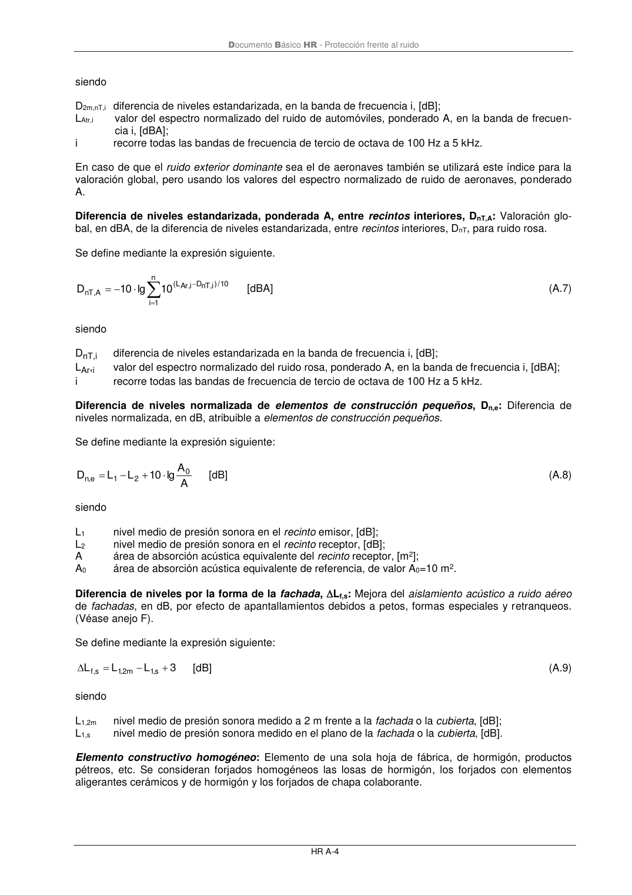

DB-HR Protección frente al ruido · edición 2019-12-20 · capa oficial
Documento DB-HR-oficial · SHA-256 del PDF a67baeca5138bb1f121f797d23a79a4557bd9ac4abacd954024893e05411eeab
Página física 46 de 80.
Copia fiel del PDF fuente · Fuente oficial
Ficha de la disposición en la fuente oficial
Formato: Texto de la página (Markdown)
Documento Básico HR - Protección frente al ruido
HR A-4
siendo
D2m,nT,i diferencia de niveles estandarizada, en la banda de frecuencia i, [dB];
LAtr,i
valor del espectro normalizado del ruido de automóviles, ponderado A, en la banda de frecuen-
cia i, [dBA];
i
recorre todas las bandas de frecuencia de tercio de octava de 100 Hz a 5 kHz.
En caso de que el ruido exterior dominante sea el de aeronaves también se utilizará este índice para la
valoración global, pero usando los valores del espectro normalizado de ruido de aeronaves, ponderado
A.
Diferencia de niveles estandarizada, ponderada A, entre recintos interiores, DnT,A: Valoración glo-
bal, en dBA, de la diferencia de niveles estandarizada, entre recintos interiores, DnT, para ruido rosa.
Se define mediante la expresión siguiente.
=
−
−
=
n
1
i
10
/)i,
nT
D
i,
Ar
L
(
A
,
nT
10
lg
10
D
[dBA]
(A.7)
siendo
DnT,i
diferencia de niveles estandarizada en la banda de frecuencia i, [dB];
LAr,i
valor del espectro normalizado del ruido rosa, ponderado A, en la banda de frecuencia i, [dBA];
i
recorre todas las bandas de frecuencia de tercio de octava de 100 Hz a 5 kHz.
Diferencia de niveles normalizada de elementos de construcción pequeños, Dn,e: Diferencia de
niveles normalizada, en dB, atribuible a elementos de construcción pequeños.
Se define mediante la expresión siguiente:
A
A
lg
10
L
L
D
0
2
1
e
,n
+
−
=
[dB]
(A.8)
siendo
L1
nivel medio de presión sonora en el recinto emisor, [dB];
L2
nivel medio de presión sonora en el recinto receptor, [dB];
A
área de absorción acústica equivalente del recinto receptor, [m2];
A0
área de absorción acústica equivalente de referencia, de valor A0=10 m2.
Diferencia de niveles por la forma de la fachada, Lf,s: Mejora del aislamiento acústico a ruido aéreo
de fachadas, en dB, por efecto de apantallamientos debidos a petos, formas especiales y retranqueos.
(Véase anejo F).
Se define mediante la expresión siguiente:
3
L
L
L
s,1
m
2
,1
s,f
+
−
=
[dB]
(A.9)
siendo
L1,2m
nivel medio de presión sonora medido a 2 m frente a la fachada o la cubierta, [dB];
L1,s
nivel medio de presión sonora medido en el plano de la fachada o la cubierta, [dB].
Elemento constructivo homogéneo: Elemento de una sola hoja de fábrica, de hormigón, productos
pétreos, etc. Se consideran forjados homogéneos las losas de hormigón, los forjados con elementos
aligerantes cerámicos y de hormigón y los forjados de chapa colaborante.
